If you first need to get your website up and running, follow along with these step-by-step instructions before moving forward.
TL;DR
When we render a new Quarto site, it converts all of our markdown into HTML and applies a pre-built CSS stylesheet (the Bootswatch Cosmo theme). We can modify the appearance of our website in a number of ways. We’ll learn a bit about the following (but know that this is just a starting point!):
Editing the index.qmd YAML – you can apply a pre-built template to give your landing page a sleek and professional appearance (we can further modify this later with some CSS).
Editing the _quarto.yml file – here we can easily update our top navigation bar (e.g. add new pages), add a page footer, a favicon, Google Analytics, declare a main font, and more. We can also switch the default theme to a different pre-built Bootswatch theme (by replacing cosmo with an alternative theme name).
Defining CSS rules in the styles.css file that comes with every new Quarto site. This allows you to fine-tune the appearance of your site.
Creating a .scss file(s) that contains Sass variables to quickly customize your website’s theme – these take the form of $var-name: value; and you can find a list of them in the Quarto documentation.
Or…
TL;DR
Combine all of the above!
Approaching this in the following order worked best for me:
First, add a template to index.qmd, then fill out as much of the _quarto.yml file as you can/want – this is the easiest way to add some really cool features with minimal effort.
Next, create a styles.scss file (name it however you want), link to it in _quarto.yml (this applies your styles to your Quarto site), and define your Sass variables.
Finally, make fine-tuned adjustments by defining CSS rules directly in your styles.scss file (you can write CSS in .scss files, but not Sass in .css files).
Working on branches is recommended!
I almost always work on a branch when making changes to my website – this way I can safely test changes before deploying them to my live site.
To create a branch, first ensure that you’re on main by typing either git branch or git status into your RStudio terminal (either will tell you which branch you’re currently on). If you’re not on main, you can switch by running git checkout main.
Create a local git branch from main by running the following in your terminal:
git checkout -b my-new-branch
Push your new local branch to GitHub by running the following in your terminal:
git push -u origin my-new-branch
You’re now ready to work as normal! Once satisfied with your changes, you can git add, git commit -m "my commit message", and git push (or use the RStudio GUI buttons in the Git tab) your files. Open a pull request from GitHub and merge into main to integrate your changes.
Let’s start styling
So you’ve created your personal website using Quarto…
Quarto gives us an easy-to-use web publishing format to create our personal websites – we can develop in a space that is comfortable (for me, that’s RStudio) and write mostly Markdown syntax (which is rendered as HTML when we build our website). A massive benefit is that these websites already look pretty slick right out of the box.
---title:"samantha csik"# if using a built-in template, this title appears under your photoimage: media/headshot.jpg # great spot for your professional headshot :) toc: false # remove "On this page" table of contentsabout: template: trestles # see other templates at https://quarto.org/docs/websites/website-about.html#templates image-shape: round image-width: 20em links:- icon: linkedin # you'll need to the fontawesome extension to include icons: https://github.com/quarto-ext/fontawesome text: LinkedIn href: https://www.linkedin.com/in/samanthacsik/- icon: twitter text: Twitter href: https://twitter.com/SamanthaCsik- icon: github text: GitHub href: https://github.com/samanthacsik- icon: envelope text: Email href: mailto:scsik@ucsb.edu---
Run quarto preview in your terminal window to view changes in near real time – each time you save your work, the preview will update in your browser.
Without an About Page template
With the trestles About Page template
Use the about option in the YAML section of index.qmd to turn your landing page into an About Page – supply it with one of five template options (here, I chose trestles). It is not necessary to do this (you can fully build/customize your web page layout using CSS), but it’s a fast way to create a clean, professional-looking landing page. NOTE: Any of your web pages can be turned into an About Page.
The links option under about allows you to create buttons underneath your landing page photo. You need to supply a text (as you’d like it to appear on the button) and an href (a link), and optionally can supply an icon.
You’ll need to install the Quarto fontawesome extension if you’d like to include icons throughout your site (including your About Page buttons). Run quarto install extension quarto-ext/fontawesome in your RStudio Terminal, which downloads the extension files and saves them to your project directory (you should see a new folder, _extensions/quarto-ext/fontawesome/ in your project directory). NOTE: You’ll need to install this for each project where you’d like to use fontawesome icons.
Update your navbar
Any edits you want to make to your navbar happen under the website: > navbar: option in your _quarto.yml file.
project: type: website output-dir: docswebsite: navbar: title:"Samantha Csik"# this is the website title as it appears in the top left corner -- clicking on this will jump you back to your landing page from where ever you are right:# align navbar items to the right/left/center- href: index.qmd text: Home # use 'text' option to update the name as you want it to appear in your navbar- about.qmd- href: resources.qmd text: Resources- href: cv/myCV.pdf text: CV- icon: github # add icons that link to social media, etc. href: https://github.com/samanthacsik- icon: twitter href: https://twitter.com/SamanthaCsikformat: html: theme: cosmo css: styles.css toc: true
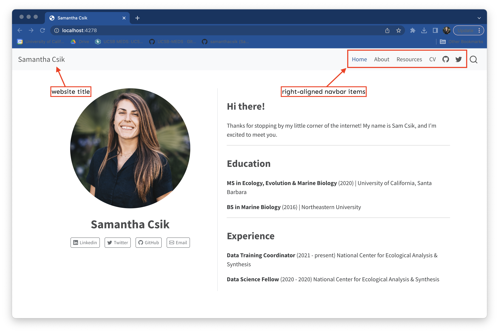
Right/center/left align your navbar contents using the website: > navbar: > right/center/left: option. Add navbar pages as an indented list beneath this option.
Navbar page names will appear the same as the title given to each .qmd file (e.g. in the YAML of about.qmd, the title option has the value About, and therefore appears in the navbar as “About”). You can update the name as it appears in your navbar by providing the text option when linking your new page in _quarto.yml (see “Home” and “Resources” pages as examples).
Link your resume or CV by providing a file path to the pdf in href (e.g. href: file/path/to/CV.pdf) and the text as you’d like it to appear in your navbar (see example provided). This will open up the browser-based pdf viewer when clicked. Be sure to provide the text option with the title as you’d like it to appear in your navbar.
Add a page footer
Any edits you want to make to a website footer happen under the website: > page-footer: option in your _quarto.yml file.
project: type: website output-dir: docswebsite: navbar: title:"Samantha Csik"# this is the website title as it appears in the top left corner -- clicking on this will jump you back to your landing page from where ever you are right:# align navbar items to the right/left/center- href: index.qmd text: Home # use 'text' option to update the name as you want it to appear in your navbar- about.qmd- href: resources.qmd text: Resources- href: cv/myCV.pdf text: CV- icon: github # add icons that link to social media, etc. href: https://github.com/samanthacsik- icon: twitter href: https://twitter.com/SamanthaCsik page-footer: background: light # or dark left:-"Copyright 2021, Samantha Csik" right:- icon: github href: https://github.com/samanthacsik- icon: twitter href: https://twitter.com/SamanthaCsikformat: html: theme: cosmo css: styles.css toc: true
Footers appear on each page (you may have to scroll to the bottom to see it appear). You can include a mix of text, icons, logos, hyperlinks, etc.
Add a favicon & personal logo
A favicon is a small icon used on web browsers to represent a website or a web page. Get creative and use a custom favicon that complements your personal logo.
project: type: website output-dir: docswebsite: favicon: file/path/to/image.png navbar: title: false # change this to false! logo: file/path/to/logo.png logo-alt:"Alt text for logo" right:- href: index.qmd text: Home # ~ additional YAML excluded for brevity ~format: html: theme: cosmo css: styles.css toc: true page-layout: full
Create your own logo using the free Adobe Express Logo Maker to include in the top left corner of your website (clicking on this will take you back to your site’s landing page) – provide Adobe with a little info about yourself, and it’ll return a bunch of AI-generated logos for you to choose from and customize further. I used this service to also create my favicon. Tip: You can download logos with a transparent background so that they can be placed anywhere on your site without having to deal with mismatched background colors. I also recommend making them as large as possible before downloading – doing so may circumvent having to adjust the logo size using CSS.
Use a Syntactically Awesome Stylesheet () to define variables and quickly customize your website’s appearance
What is Sass?
Syntactically Awesome Stylesheets
Sass is a CSS extension (provides additional features, like variables)
Sass is a CSS preprocesser (converts Sass code into standard CSS because browsers can’t interpret Sass)
I know it might feel like we’re getting ahead of ourselves a bit here, but bear with me!
Sass helps to reduce repetition
Sass extends existing CSS features in a number of exciting ways, but importantly reduces repetition. For example, let’s say you’re working on a website/web page that uses three main colors:
You might imagine how often you’ll need to type those HEX codes out as you developing your stylesheet…it can get annoying rather quickly.
Define Sass variables to reduce repetition
Sass allows us to define variables (in the form $var-name: value;) for our colors to reference instead of writing out their HEX codes each time. This makes your stylesheet more readable and easier to update (e.g. only need to change HEX codes in one spot, not multiple!)
/* -- define Sass vars --*/$darkblue: #053660;$teal: #147C91;$darkgray: #333333;/*-- use vars in CSS rules (we'll learn more about how to write CSS soon!) --*/h1 { font-color: $darkblue;}.button-styling {background: $teal;color: $darkblue;border-color: $darkgray;}
Note: Sass has two syntaxes – SCSS syntax (.scss), shown above, is the most common. It stands for Sassy Cascading Stylesheets
Quarto automatically compiles Sass
Recall: Web browsers can interpret CSS ( .css) but not Sass ( .scss or .sass). Typically, you’d need to compile (aka convert) Sass to CSS, then link the resulting .css file in your HTML.
Lucky for us, Quarto compiles the contents of a .scss file into CSS without any extra steps – meaning we can include a .scss file directly in our website’s _quarto.yml file.
Let’s create our website’s .scss stylesheet.
Create a .scss file for your website
1. Create a .scss file in the root directory of your website’s repo using the touch command in the RStudio Terminal (alternatively, use New Blank File > Text File in the Files pane):
touch styles.scss # name it whatever you want (you can apply more than one stylesheet to your website)
2. Add the /*-- scss:defaults --*/ region decorator to the top of styles.scss (required by Quarto) – you’ll write all your Sass variables underneath this.
/*-- scss:defaults --*/
3. Apply your styles.scss stylesheet to your website by updating the _quarto.yml under the format section:
project:# ~ additional YAML omitted for brevity ~website:# ~ additional YAML omitted for brevity ~format: html: theme:- styles.scss toc: true
Define some color variables
Let’s first define the colors we want to use throughout our site. For me, that looks like this:
You can also define values with units, e.g. $my-font-size: 25px; or $my-width: 500px;.
Note: In .scss files, // denote single line comments. Multi-line comments start with /* and end at the next */.
Use your color variables as values for Quarto’s Sass variables
Quarto provides a list of Sass Variables that can be specified within .scss files. Let’s use our newly minted Sass color variables to change things like the background color, navbar & footer colors, hyperlink color, and more.
/*-- scss:defaults --*/// Colors$light-green: #D1D9CE;$dark-green: #98A08D;$cream: #FDFBF7;$gray: #64605f;$light-gray: #949799;$purple: #9158A2;// Base document colors$navbar-bg: $cream; // navbar$navbar-fg: $dark-green; // navbar foreground elements$navbar-hl: $purple; // highlight color when hovering over navbar links$body-bg: $light-green; // page background $body-color: $gray; // page text $footer-bg: $cream; // footer $link-color: $purple; // hyperlinks // Inline code$code-bg: $cream; // inline code background color$code-color: $purple; // inline code text color// Code blocks$code-block-bg: $cream; // code block background color
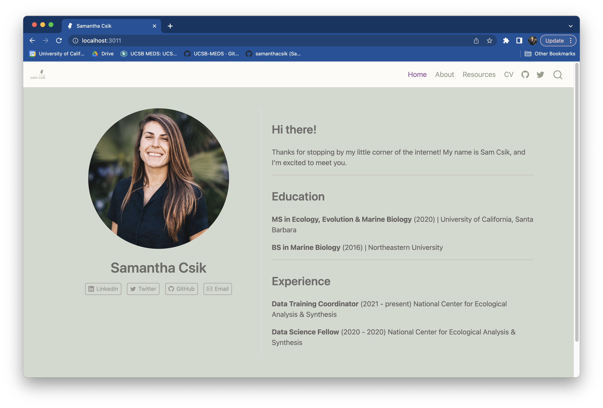
Okay, tell me that that doesn’t already look so much better?!
You don’t have to create a theme entirely from scratch! If you like parts of a pre-built Bootswatch theme (e.g. cosmo), you can modify it by layering on your desired updates. See the Quarto documentation for more details.
_quarto.yml
# additional metadata excluded for brevity ~format: html: theme:- cosmo- styles.scss toc: true page-layout: full
Import and apply new fonts
Explore Google fonts
With Quarto, we can define a primary font directly in our _quarto.yml file:
To do so, we first need to choose and import our font(s). Start by exploring the many fonts available at https://fonts.google.com/.
Selecting a Google font(s)
1. Once you’ve found a font you’d like to use, scroll down to the Styles section of that font’s page – here you’ll (typically) find a number of different weights (e.g. thin, light, regular, bold) and styles (e.g. italic). Click on the + button, , to the right of the style you want. In this example, I choose Nunito in the Light 400 and ExtraBold 800 styles, though you can choose as many fonts and styles to import as you’d like. Note: You must import a higher weight font style if you plan to use bolded text.
2. Click on the View selected families button, , in the top right corner to see all of your selected fonts. Under the Use on the web section, select the radio button for @import and copy everything between the <style> </style> tags (starting with @import and ending with ;) to your clipboard.
Importing a Google font(s)
To import a font, paste your copied clipboard into styles.scss under /*-- scss:defaults --*/
To apply an imported font as a primary font, update _quarto.yml with the font name.
_quarto.yml
format: html: theme:- styles.scss mainfont: Nunito toc: true page-layout: full
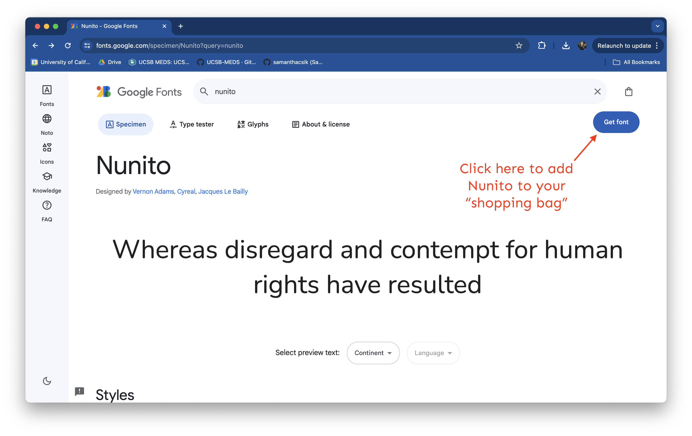
If you plan to use multiple fonts, you can create Sass variables for each font type, then use those variables as you construct your CSS rules. For example, this slide deck uses three fonts (Sanchez, Montserrat, and Roboto Mono):
You must import a higher font weight (e.g. 800), in addition to your standard “regular” weight, if you wish to bold text – even bolding text using markdown syntax (e.g. **this text is bold**) will not work unless a higher font weight style is imported).
With just a few YAML additions and a handful of Sass variables, we’ve already really transformed the appearance of our website. Next up: refining.
Enter HTML and CSS
In order to really fine-tune the appearance of our site, we need to dive a bit into the world of HTML and CSS.
We’re going to spend a few minutes first learning about what makes a web page…look like a web page, then apply what we learn to our own Quarto sites.
HTML & CSS are the building blocks of web pages
HTML (Hypertext Markup Language) is a markup language1 that tells web browsers how to structure web pages. You can think of HTML as the skeleton of a web page. It gives authors the means to create elements like headings, text, tables, lists, add media, etc.
1Markdown and R Markdown are both lightweight markup languages – they’re a bit easier for humans to write and read than HTML. HTML is more expressive and allows for customization that is difficult or impossible to do in Markdown.
HTML & CSS are the building blocks of web pages
CSS (Cascading Style Sheets) is a programming language that allows you to control how HTML elements look on a web page. You can think of CSS as the outfit that is styling the skeleton. It allows authors to control aspects such as the colors, layout, and font style.
Your browser has its own internal style sheet to render HTML
Your browser will style HTML documents using an internal style sheet, which ensures that headings are larger than normal text, links are highlighted, lists and tables are structured correctly, etc.
HTML
Browser default styling
CSS adds pizzazz to web page renderings
CSS allows website developers to add additional styling to web browser defaults. Otherwise, websites would be pretty boring to look at (and they’d all generally look the same).
Browser default styling
CSS styling
A light introduction to HTML
HTML consists of a series of elements
Elements comprise start tags and end tags that render some form of content in a particular way.
The basic anatomy of an HTML element:
In Markdown syntax, this HTML element would be written as: # Welcome to your website customization workshop
Note: Some HTML elements have no content (e.g. the <br>, or “break” element) – these are called empty elements and do not have an end tag.
an inline container used to markup part of a text or document
HTML elements can be nested
Remember to close out tags from the inside-out to avoid unexpected renderings.
Nested HTML elements:
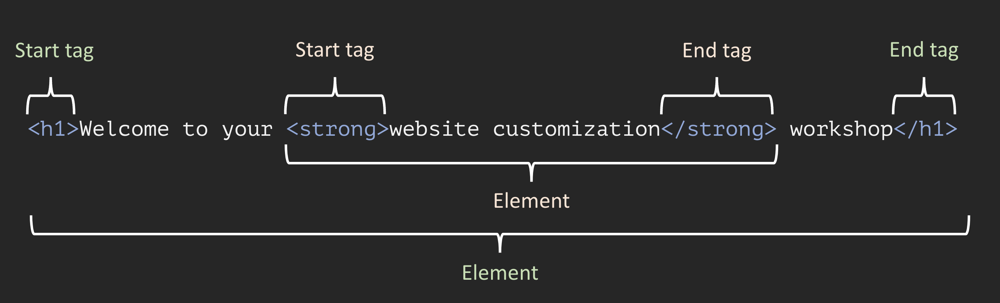
In Markdown syntax, this HTML element would be written as: # Welcome to your **website customization** workshop
Important: Take extra care to never skip (or incorrectly type) an end tag! Some elements will still display correctly if you forget an end tag, but you cannot rely on this. Forgotten end tags will cause you headaches as you try troubleshoot unexpected results and errors .
HTML attributes can be used for targetted styling
Attributes provide extra information about elements. They are always specified in the start tag and usually come in value/name pairs (e.g. attributeName="attributeValue").
Attributes can be used for targeted styling with CSS (e.g. class or id attributes) – more on this soon.
You can use any text editor to write HTML, but the following steps assume you’re working in RStudio (you can continue to work on your branch in your website’s project directory).
1. In the RStudio Terminal, use the touch command to create an HTML file (for simplicity, I did this in my project’s root directory), then choose Open in Editor.
touch practice-html.html
2. Type or copy/paste the following into your practice-html.html file:
practice-html.html
<!DOCTYPE html><!-- All HTML docs start with a doc type declaration--><html><!-- This tag represents the root of the HTML doc --><head><!-- Write any metadata about the HTML doc here (inluding the link to an external CSS file) --></head><body><!-- Write all the contents of the HTML doc here --><h1>Here is my level one header</h1><p>Here is my first paragraph</p><p>Here is my second paragraph, where you can read more about <ahref="https://ucsb-meds.github.io/">MEDS</a>.</p><p>This is very important text!</p></body></html>
Click Preview to render the HTML
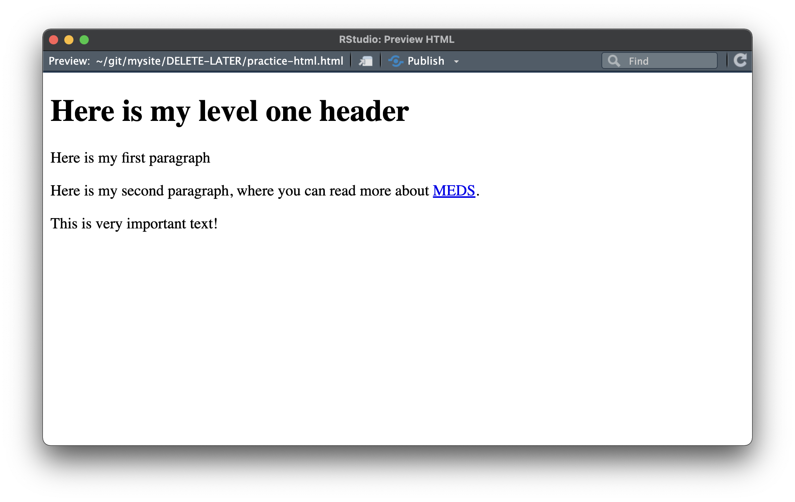
markdown makes it easy to “write” HTML
Quarto (.qmd) files allow us to write markdown, then Render that markdown as HTML (we can also write HTML directly in .qmd files).
1. Now, use the touch command (or New Blank File > Quarto Doc… in the Files pane) to create a new .qmd file.
touch practice-markdown.qmd
2. Type or copy/paste the following into your practice-markdown.qmd file:
practice-markdown.qmd
# Here is my level one headerHere is my first paragraphHere is my second paragraph, where you can read more about [MEDS](https://ucsb-meds.github.io/).This is very important text!
Click Render to render the markdown as HTML (it will render it as a web page if you’re in your website’s project directory)
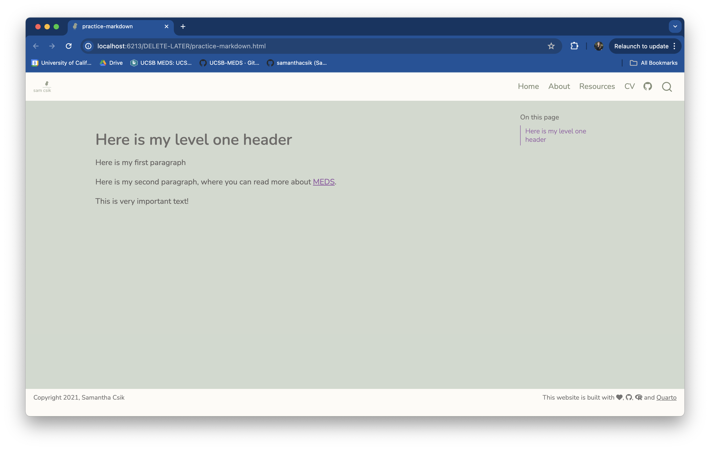
A light introduction to CSS
CSS is a rule-based language
CSS is a rule-based language, meaning that it allows you to define groups of styles that should be applied to particular elements or groups of elements on a web page. For example, “I want all level one (<h1>) headings to be green text with a bit of extra space between each letter” could be coded as:
Selectors select the HTML element(s) you want to style (e.g. level one headings, <h1>)
Declarations sit inside curly brackets, {}, and are made up of property and value pairs. Each pair specifies the property of the HTML element(s) you’re selecting (e.g. the color property of the element <h1>), and a value you’d like to assign to that property (e.g. green)
A property and its corresponding value are separated by a colon, :. Declarations end with a semicolon, ;
There are a number of different CSS selector types
The next few slides review just a few basic CSS selector types for styling HTML elements – these will get you far in your website customization journey (but check out you can learn more about all the different categories of CSS selectors here):
Element selectors
Grouping selectors
ID selectors
Class selectors
Universal selector
Inline styling (not a selector type, but an alternative way to apply CSS styling)
Any HTML element can be used as a selector. The declarations specified apply to all HTML elements of that type.
CSS
h1 {color: green;letter-spacing: 5px;}
HTML
<h1>My level one header will be styled</h1><h2>This level two header will not be styled</h2><p>Neither will this paragaph</p><h1>But this second level one header will be</h1>
Output
Rather than defining separate rules for multiple element selectors that you want styled the same way, you can group them together. Simply separate each selector by a comma.
CSS
h1, h2, p {text-align: center;color: purple;}
HTML
<h1>My level one header will be styled</h1><h2>This level two header will be styled</h2><h3>This level three header will not be styled</h3><p>This paragraph will be styled</p>
An ID selector uses the id attribute of an HTML element to style that specific element. IDs must be unique within a page and therefore can only be used to select and style one unique element. ID selectors are written using a # followed by the selector name, e.g. #selector.
CSS
#para1 {color: red;text-align: center;}
HTML
<pid="para1">My first paragraph is styled</p><p>But my second paragraph is not</p>
Output
A class selector uses the class attribute of an HTML element to style that specific element. Class selectors are written using a . followed by the selector name, e.g. .selector. HTML elements can have more than one class, e.g. <p class="class1 class2">
The universal selector selects all HTML elements on the page. It is written using only an asterisk, *.
CSS
* {text-align: center;color: orange;}
HTML
<h1>My level one header will be styled</h1><h2>This level two header will be styled</h2><p>This paragaph will also be styled</p>
Output
The style attribute may be used inline to apply unique styles to a single element. It’s best practice to use these sparingly as it mixes content (HTML) with presentation (CSS) and cannot be reused with other elements like defined CSS rules can.
HTML with inline styling
<p>This is a normal paragraph</p><pstyle="color: red; font-style: italic;">This paragraph has inline styling</p><p>Here, only the word <spanstyle="color: red; font-style: italic;">paragraph</span> is styled</p>
Output
Note: You can also use the <span> tag to apply class or ID selectors to part of an element (e.g. let’s say I have a class selector, .blue-text{color: blue;}. I can target parts of HTML elements using this selector in conjunction with the <span> tag: <p>In this sentence, only the word <span class="blue-text">blue</span> is styled.</p>)
Conflicting CSS rules?
It is often the case that more than one CSS rule will point to the same element. For example, say you have a style sheet and HTML that look like the following:
<h1>This is my header</h1><p>This is my paragraph with <spanstyle="green-text">some green text</span></p>
In this case, we have a universal selector that styles all of our text orange, but we also have an element selector that colors our <h1> elements blue and a class selector that is applied inline to color a subset of text green. How do you know which style will be declared and applied to each of our HTML elements?
The highest specificity value “wins”
Specificity can be complicated (especially when you consider all the other types of selectors we haven’t covered in these slides). For the purposes of this workshop and getting started on your CSS journeys, a general rule of thumb is as follows: Inline styles are the most specific and will override ID selectors, which will override class selectors, which will override element selectors, etc. The order that rules are written in your stylesheet matters as well – since rules are read top to bottom, a directly competing rule farther down your stylesheet will take precedent.
Inline Styles
IDs
Class Selectors
Element Selectors
Universal Selectors
Practice writing some CSS rules to style your HTML elements
Exercise: practice writing CSS (1/3)
1. Return to your RProject (where you created your practice-html.html file). In your terminal window, use the touch command to create a CSS file in the same location as your html file:
touch practice-styles.css
2. Link your CSS file inside the <head> of your HTML file (read more about inserting style sheets here).
<!DOCTYPE html><!-- All HTML docs start with a doc type declaration--><html><!-- This tag represents the root of the HTML doc --><head><!-- Write any metadata about the HTML doc here (inluding the link to an external CSS file) --><linkrel="stylesheet"href="practice-styles.css"></head><body><!-- Write all the contents of the HTML doc here --><h1>Here is my level one header</h1><p>Here is my first paragraph</p><p>Here is my second paragraph</p><buttontype="button"onclick=window.location.href='https://ucsb-meds.github.io'>Go to MEDS website</button></body></html>
Exercise: practice writing CSS (2/3)
3. Write some CSS selectors in your practice-styles.css file and save. Update your HTML file accordingly to apply your styles and Previewpractice-html.html to see the updates. Some suggestions:
(a) create an <h1> element selector that styles the background color to something of your choosing (hex and rgb codes allowed!) and centers the text on the page,
(b) create a class selector to color the text of your first paragraph blue,
(c) use that same class selector inline to style just the word second (in your second paragraph) blue,
(d) create a class selector to color your button text red and enlarge the font size (try 20px),
(bonus) What happens if you also apply that red/large font selector (from part (d)) to your second paragraph?
<!DOCTYPE html><!-- All HTML docs start with a doc type declaration--><html><!-- This tag represents the root of the HTML doc --><head><!-- Write any metadata about the HTML doc here (inluding the link to an external CSS file) --><linkrel="stylesheet"href="practice-styles.css"></head><body><!-- Write all the contents of the HTML doc here --><h1>Here is my level one header</h1><pclass="blue-text">Here is my first paragraph</p><pclass="large-red-text">Here is my <spanclass="blue-text">second</span> paragraph</p><buttontype="button"class="large-red-text"onclick=window.location.href='https://ucsb-meds.github.io'>Go to MEDS website</button></body></html>
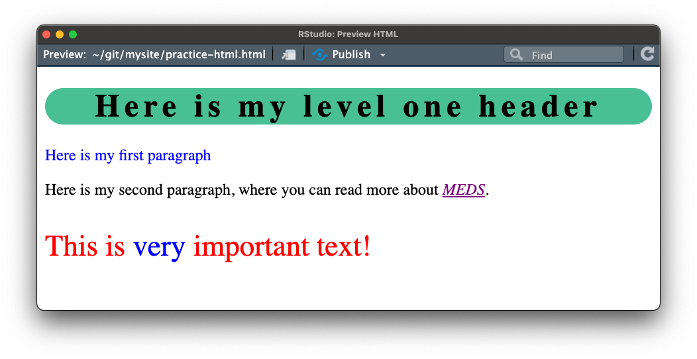
Okay, but what about Quarto?
When you create a new Quarto site, it automatically creates a styles.css file
We can write our CSS rules in styles.css, but alternatively, we can write them directly in our styles.scss file (remember, you can write CSS in a .scss file but you can’t write Sass in a .css file).
You can delete styles.css if you don’t plan to use it, or leave it be (it’s easy to create a new one using the touch command in your terminal).
Create a section for defining CSS rules in styles.scss
To start defining CSS rules in styles.scss you first need to add the /*-- scss:rules --*/ region decorator beneath your Sass variables section:
Next, we’ll walk through some examples of how to modify your site with your own CSS rules.
Determine which element you want to style
Let’s say I want to similarly style (add spacing between each letter, increase the font weight, make a dark gray color) the following text on my website:
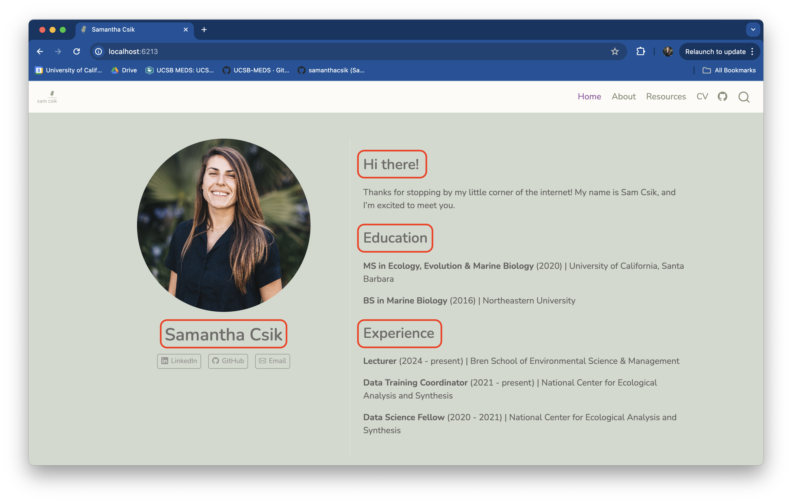
On my landing page, I want to style my name, “samantha csik”, and the three section headers, “hi there!”, “education”, and “experience”
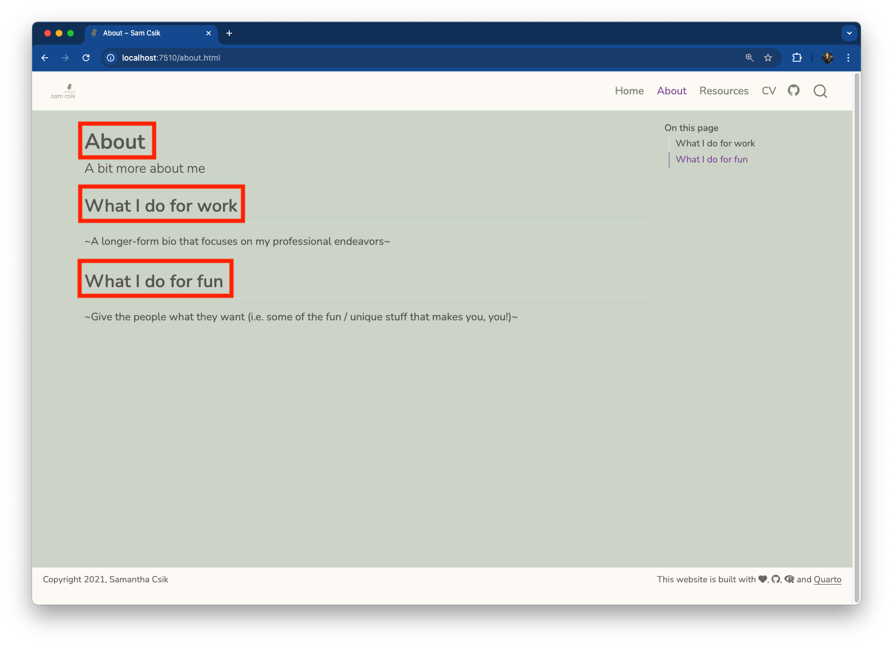
On my about page, I want to style the top header, “about”
On my resources page, I want to style the top header, “resources”
But what if I don’t know what HTML element type this is? Inspect!
Using the Inspect tool is a great way to get a better sense of how CSS is used to modify particular HTML elements (this works with any web page, and also your locally hosted website preview).
In your website preview, right click on an element of interest (in this case, let’s start with my name, “samantha csik”) and choose Inspect to pull up the underlying HTML & CSS files.
Hovering your mouse over different lines of HTML highlights the corresponding element on your webpage.
My name is an <h1> element
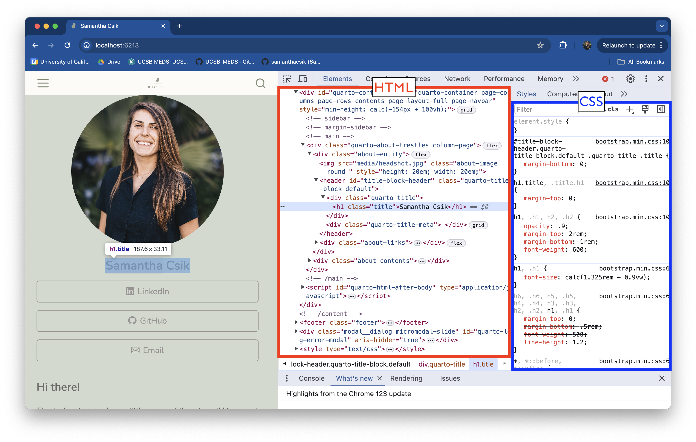
Note: This <h1> element also has a class title – more on that in a minute.
My landing page section, “education” (as well as “hi there!” and “experience”) are <h3> elements
My about page title (as well as my resource page title) are <h1> elements
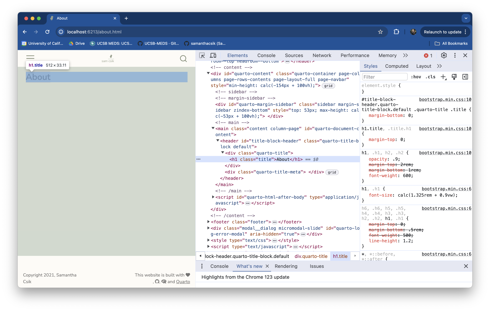
Write a CSS grouping selector to style <h1> and <h3> elements
Here, we have a grouping selector that targets all<h1> and <h3> elements – it increases both the spacing between each letter and the font weight (makes it bolder), and it colors those header levels gray (reminder: I created a Sass variable: $gray: #64605f;).
I don’t need to make any changes to the HTML (in index.qmd, about.qmd, and resources.qmd since this grouping selector targets all<h1> and <h3> elements across my site. If an element on any of my pages has either of those tags, it will get styled with the declarations included in our CSS rule.
What’s with that title class selector?
Note how the page headers (“samantha csik” on the landing page, and “about” and “resources” on those respective pages), which all happen to be <h1> elements, are also of class, title.
The Quarto framework has defined a class selector called .title and applied that class to the above elements. We can modify it however we’d like. For example, let’s turn text elements of class title the color red:
In this case, I don’t need to make any changes to the HTML (in index.qmd, about.qmd, and resources.qmd) since those <h1> elements are already assigned the class, title.
Okay, but what about <h1> elements that are not of class title?
Let’s write a couple of other elements that are not of class="title" to see what happens. I’ll do this on my about page:
---title:"about"---<h1>this is an `<h1>` element</h1># alternatively, you can write <h1> elements using markdown (`# this is an `<h1>` element`)<h1 class="title">this is an `<h1>` element of class `title`</h1><p>this is a `<p>` element</p><p class="title">this is a `<p>` element of class `title`</p>
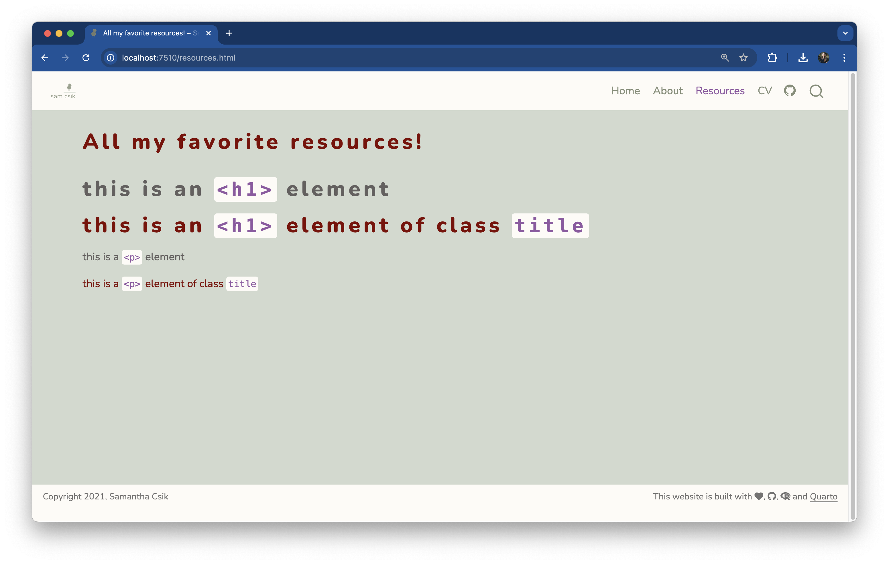
You can add elements on your web pages using either Markdown syntax (e.g. use # text here to denote an <h1> element) or use HTML tags (e.g. use <h1>text here</h1>). I tend to use a mix of both Markdown syntax and HTML tags.
Class selectors allow us to customize exactly how CSS rules apply to particular elements. In this example, only <h1> elements that are of class title are colored red. Any <h1> elements that are not of class title are styled according to our h1, h3 {} element selector.
We can apply the title class to any text element. In this example, we apply it both to an <h1> element and a <p> element.
Let’s create a class named .custom-subtitle that styles text in the following ways: increases font size, italicizes it, and colors it purple. We can then add an element to our resources page and apply our new class selector:
Let’s say we want the option to add a bit of extra space beneath this particular custom subtitle before the element is rendered – but maybe we don’t always want that extra space beneath every custom subtitle. If we were to add a declaration that increases margin-bottom directly to our .custom-subtitle class selector, all elements of class custom-subtitle would have that extra space.
One solution, then, is to create a new class selector (we’ll call it .bottombr, for “bottom break”) that we can specifically apply to our custom subtitle on the resources page.
Here, we add our bottombr class selector within the "" after custom-subtitle and a space.
---title:"resources"---<p class="custom-subtitle bottombr">Here is my custom subtitle.</p><p>And here is some normal text beneath it.</p>
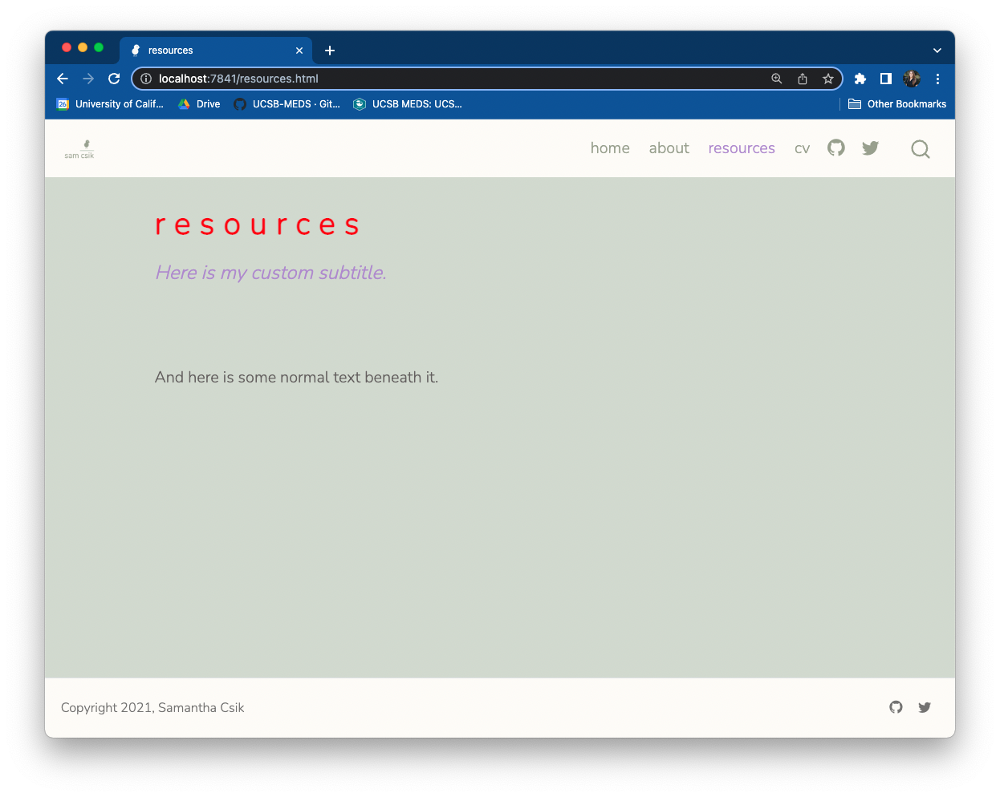
Remember, HTML elements can have more than one class, e.g. <p class="class1 class2 etc">
Quarto also provides its own syntax for applying classes to elements
You can create both divs (block-level regions of content) and spans (inline content) using Quarto’s syntax. For example:
Divs
# Quarto syntax::: {.my-selector}Some element (e.g. text) to style:::# HTML syntax<divclass="my-selector"> Some element (e.g. text) to style</div>
Spans
# Quarto syntaxSome text with just [this section]{.my-selector} styled# HTML syntax<p>Some text with just <spanclass="my-selector">this section</span> styled</p>
You can mix and match syntaxes in .qmd files
I tend to use a mix of both approaches (HTML & Quarto syntax). For example:
---title:"resources"---<p class="custom-subtitle">Here is my custom subtitle.</p><p>And here is some normal text beneath it.</p>[Here is another custom subtitle written with Quarto syntax]{.custom-subtitle}Also note that I do not need to wrap this text in the `<p>` tag in order for it to render as normal text. `.qmd` files allow us to seamlessly blend markdown syntax with HTML.
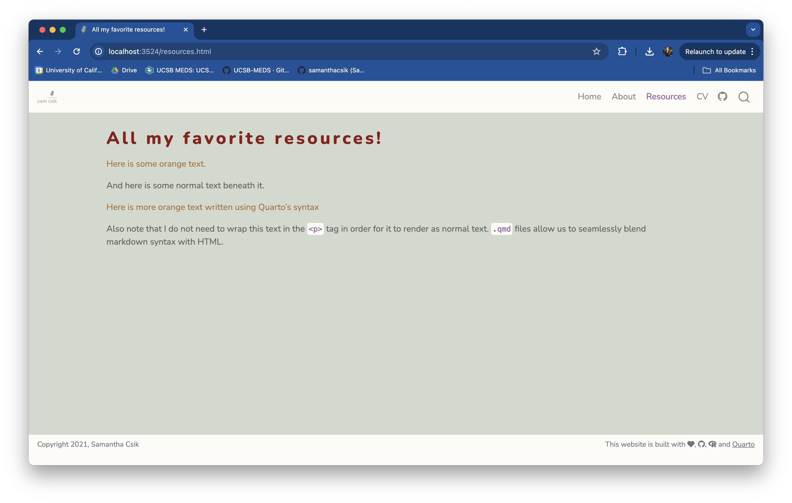
You’ll notice the []{} and ::: {} ::: syntax throughout Quarto’s documentation, and also if you explore the source code of other Quarto websites/presentations/etc. You don’t need to use it, but it helps to know what it is when you see it!
Get inspired
Styling your website can be challenging
^ How I feel most of the time while trying to write CSS
For me, it’s a lot of it is trial and error. Inspecting your website can take patience and persistence to figure out how exactly to target your desired element. Some things that have helped me:
re-rendering often to ensure your Sass/CSS is working as expected
Google! (lots of queries that look like, “CSS underline text”, “CSS rounded corners”, etc.)
W3 Schools – seriously such a valuable resource (especially their interactive tutorials)
drawing inspiration (and borrowing source code) from other webpages
Check out source code (specifically the stylesheets) of other sites
Learn from others! Exploring the source code for other websites, presentations, etc. is, in my opinion, critical for learning this new skill and applying it to your own work.
More and more Quarto websites are popping up all the time – Twitter is (or at least was…) a great spot to find folks sharing their sites (I’ll never stop obsessing over Maya Gans’ Quarto site). You can also explore the source code and stylesheets for Quarto presentations (cough cough, like this very presentation), books, and more.
And don’t limit yourself to Quarto sites! Check out The Distillery Showcase, which links to a long list of websites built with R’s distill package (Note: the distill framework is a bit different – when exploring .css files, look for CSS selectors beneath the section /*-- Additional custom styles --*/).
Inspecting web pages allows you to temporarily “edit” CSS
Play around with selectors and update declaration values (or add/remove declarations) while inspecting your website. This not only allows you to try out styles before actually hard-coding them, but it also helps you identify exactly which elements different selectors are manipulating. Note that these changes are only temporary – refreshing your web browser will revert your site back to its original state.
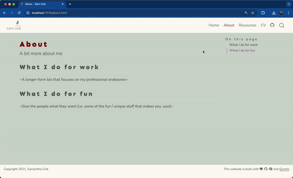
Take advantage of interactive tutorials
W3Schools has tons of great examples and interactive tutorials for learning CSS. Touching (and breaking) code is one of the best ways to learn!


 , to the right of the style you want. In this example, I choose Nunito in the Light 400 and ExtraBold 800 styles, though you can choose as many fonts and styles to import as you’d like. Note: You must import a higher weight font style if you plan to use bolded text.
, to the right of the style you want. In this example, I choose Nunito in the Light 400 and ExtraBold 800 styles, though you can choose as many fonts and styles to import as you’d like. Note: You must import a higher weight font style if you plan to use bolded text. , in the top right corner to see all of your selected fonts. Under the Use on the web section, select the radio button for @import and copy everything between the
, in the top right corner to see all of your selected fonts. Under the Use on the web section, select the radio button for @import and copy everything between the